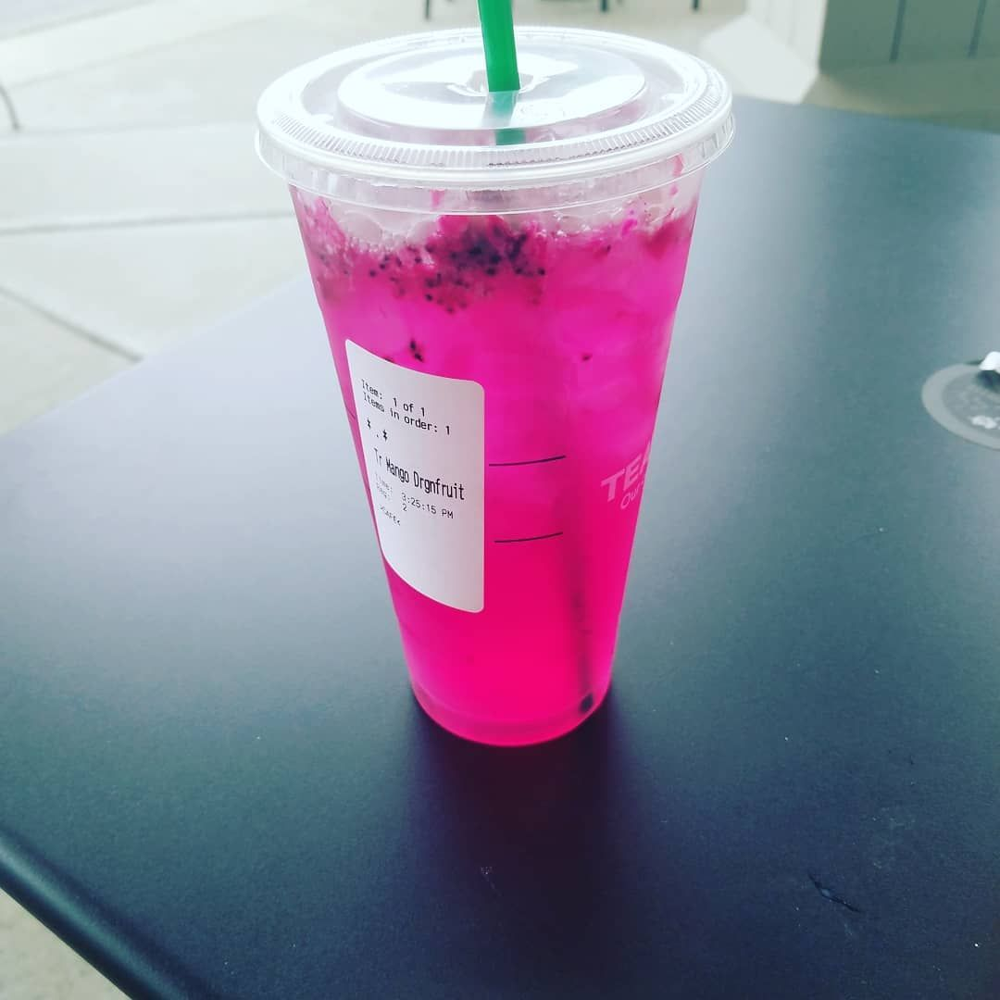
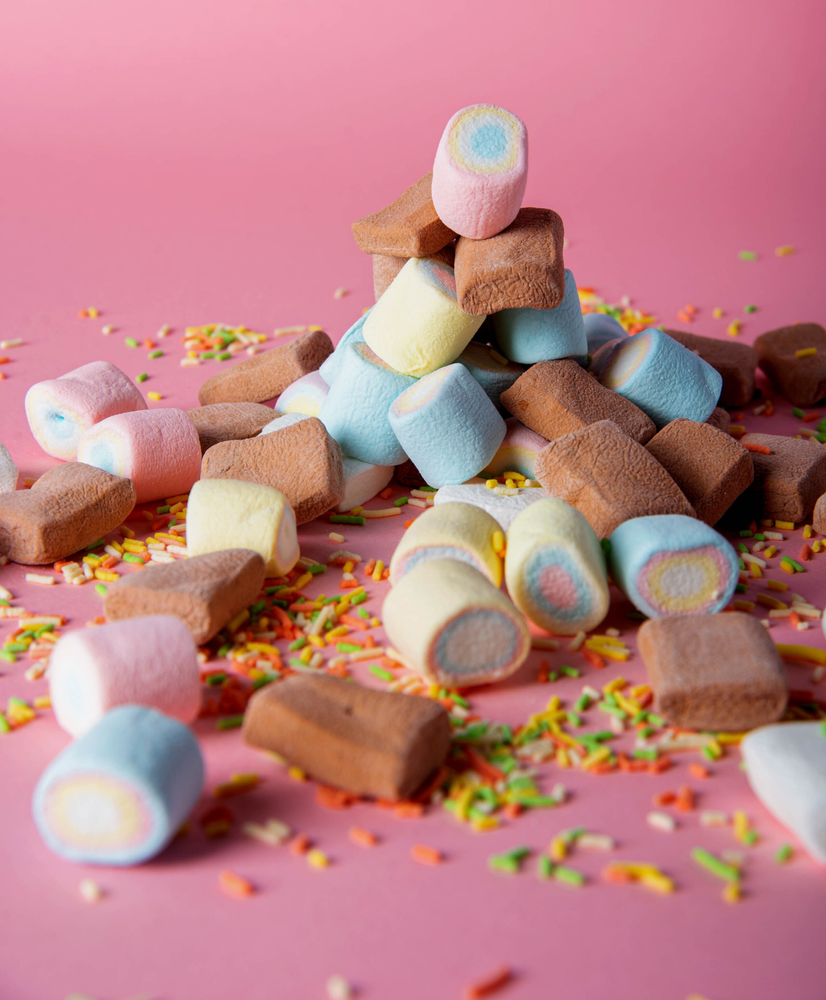

Blog
Blog

Starbucks Mango Dragon Fruit Refreshers.
- Dragon fruit is one of the exotic fruits you might see at your supermarket from time to time, and it’s definitely worth a try. It has a kiwi-like texture and a beautiful pink outer shell. For a taste of this tropical fruit, order a Mango Dragonfruit Refresher. The combination of sweet mango and dragon fruit flavors with real diced dragon fruit is sure to cool you down! It has 45 milligrams of caffeine and 19 grams of sugar.
- For an extra-thirst-quenching option, try the Mango Dragonfruit Lemonade Refresher. It uses the same base, plus lemonade. This option still has 45 milligrams of caffeine, but there are 31 grams of sugar in the lemonade version.

These Marshmallows Change Color When You Toast Them.
- The marshmallow makers at Jet-Puffed already know a thing or two about getting festive thanks to their seasonal takes like candy corn-flavored marshmallows for Halloween and pastel-colored "bunnymallows" for Easter. But now the brand is taking that colorful concept even further by adding color-changing treats to the mix.
- Keen to brighten up the bonfire season (last year they released glow-in-the-dark packaging), Jet-Puffed's new limited-edition marshmallows will actually change colors when met with direct heat. While Jet-Puffed is remaining tight-lipped about what the secret ingredient is and how it works, we do know that the marshmallows are now available in two color-changing varieties: pink marshmallows that will turn orange and blue marshmallows that will turn green. The transformation occurs about 10 seconds after being exposed to a flame.